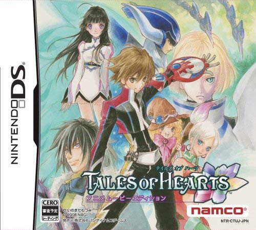

テイルズオブハーツ
 2008年12月18日発売プラットフォーム：DS , PS Vita , iOS（PS Vita以降はリ・イマジネーション版）
シリーズ第11作目。
DS版は劇中のムービーがアニメーションムービーのものとCGムービーのものの二種類が同時に発売された。前作のモデルが今までにないトゥーン調であったことを含めて考えると、開発にあたってグラフィックや演出を模索していた時期であったのかもしれない。なお、リ・イマジネーション版ではアニメーションムービーが採用されていること、以降の作品でCGムービーが登場しないことから、第1作目から続くアニメーションムービーでの演出という形に落ち着いたようである。
本作の主人公の冒険の動機が〈感情を失ってしまったヒロインの心を取り戻す為に世界中に散らばった心の欠片を探す〉というものから分かるように、本作は心がテーマとなっている。また、登場人物の多くは宝石から名前が取られている。